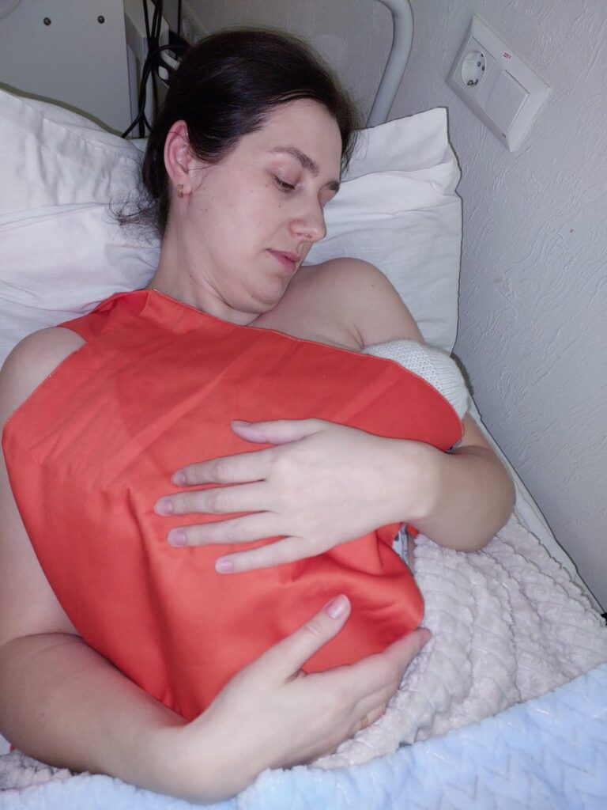

Something so simple – yet so effective in saving lives
KMC is all about skin-to-skin contact, exclusive breast, or breast milk feeding – and of course medical assessment.
Studies of KMC report increased survival, decreased infection, improved nutrition and growth and possible improved development. Mothers have less postpartum depression and increased confidence in caring for their babies. Recently the World Health Organization has recommended KMC be started at birth even if small babies require other assistance in care.
During active hostilities, the number of premature births increases, and the lack of electricity complicates the uninterrupted operation of equipment in neonatal wards. In addition, due to unpredictable bombings, it is necessary to immediately run to bomb shelters.
In addition to the carriers themselves, a large part of the project is dedicated to training how to effectively implement Kangaroo Mother Care for healthcare professionals as well as parents of premature babies to ensure the most effective and efficient care.
The carriers are manufactured in Moldova by Ascend Group SRL (Director Geta Rasciuc – sling and carrier expert with over 17 years of experience, board member of the International Council of Babywearing Consulting Schools), using local materials. They are manufactured in accordance with the EU safety standard EN 13209-1 using materials that meet the clinical hygiene requirements for washing at high temperatures.
The Fellowship has supplied 8000 KMC carriers to neonatal units in Ukraine and have received excellent feedback from medical and nursing staff as well as mums and dads.
